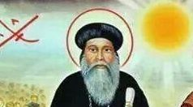

Saint Abraham 1er
Découvre l'histoire des papes de l'église copte orthodoxe.
En ce jour de l’an 695 des martyrs (979 après Jésus Christ) décéda le pape saint Abraham ibn Zara’a le 62ème patriarche d’Alexandrie. Ce père était un chrétien de Syrie. Il était un riche commerçant et se rendait souvent en Egypte pour les besoins de son travail. Par la suite il s’installa dans ce pays. Abraham était miséricordieux envers les nécessiteux et il fut réputé pour ses connaissances et sa bonté.Lorsque le siège patriarcal devint vaquant, les évêques et les notables de l'Eglise furent unanimes pour le choisir comme patriarche. Il distribua ses biens aux pauvres et aux nécessiteux dès son intronisation. Ce patriarche mit fin aux mauvaises habitudes qui s'étaient établies. Il interdit la pratique de la simonie dans l’église, la prise de concubine et il excommunia tous ceux qui les pratiquaient. Un riche notable qui n’accepta pas de se détacher de son harem fut excommunié par le pape et il subit une mort pitoyable. Celui-ci fut un exemple pour un grand nombre.
A cette époque eut lieu le miracle du transport de la colline de Mokattam. En effet le calife fatimide Al-Muizz li-Dîn Allah avait un ministre nommé Jacob fils de Kéllés qui détestait les chrétiens et voulait les piéger. Celui-ci dit au calife qu’il y a dans l’Evangile un verset qui dit : « Si vous avez de la foi gros comme un grain de sénevé, vous direz à cette montagne : Déplace-toi d'ici à là, et elle se déplacera. » Il dit au calife que ces prétentions sont mensongères et lui suggéra de convoquer le patriarche pour que celui-ci prouve la véracité des paroles de leur Christ. Le calife pensa que si la colline du Mokattam pouvait être un peu plus loin du Caire, le centre-ville sera plus vaste et, si cela n’était pas vrai, il aurait une bonne excuse pour persécuter les chrétiens.
Alors il convoqua le patriarche et lui expliqua ces réflexions. Le patriarche demanda un délai de trois jours qu’il obtint puis il réunit les évêques et les moines qui étaient proches et ils demeurèrent pendant trois jours à l’église de la sainte Vierge – al-Moallaka au cours desquels ils prièrent et jeûnèrent sans interruption. A l’aube du troisième jour, la sainte Vierge apparut au patriarche et lui fit savoir que Dieu réalisera ce miracle par l’intermédiaire d’un saint homme, qui était tanneur de son état nommé Simon. Le pape envoya chercher celui-ci puis ils se rendirent chez le calife avec les évêques, les moines et une foule de fidèles et l’informèrent qu’ils étaient prêts. Tous se rendirent auprès de la colline et ils formèrent deux groupes : d’un côté le patriarche avec tous les chrétiens et d’un autre Al-Muizz et ceux qui l’accompagnaient. Le pape et les chrétiens se mirent à prier puis ils se prosternèrent trois fois en disant : Kuri`e `ele`ycon – Pitié Seigneur. A chaque fois qu’ils se levaient la colline se soulevait et à chaque fois qu’ils se prosternaient à terre, elle se reposait. De plus la colline avançait en même temps qu’ils le faisaient. Ce phénomène troubla le calife et ceux qui l’accompagnaient. Alors le calife se rapprocha du patriarche et lui dit : « Dieu est grand, béni soit son Nom. Vous avez prouvé que votre Foi est véritable et qu’elle est vivante » et il lui promit de lui donner tout ce qu’il demandera. Le patriarche commença par décliner la proposition puis, devant l’insistance du calife, demanda de pouvoir rénover les églises, principalement celle de saint Mercure, le détenteur des deux épées situées dans le vieux Caire. Le calife rédigea un décret en ce sens et lui proposa une somme d’argent que le patriarche refusa. Ceci fit grandir le prestige du patriarche auprès du calife. L’église de saint Mercure et de nombreuses autres églises furent reconstruites.
En commémoration de ce miracle, l’Eglise ajouta trois jours au jeûne de l’Avent qui devint quarante-trois jours. Ce patriarche institua aussi le jeûne de Jonas de trois jours qui était déjà en vigueur chez les syriaques.
Et lorsqu’il acheva son bon combat, ce pape décéda en paix après avoir siégé trois ans et six mois sur le trône de saint Marc.
Poser une question
Si vous avez une question, quelque chose que vous ne comprennez pas ou une suggestion pour le site informez-le en remplissant ce formulaire !